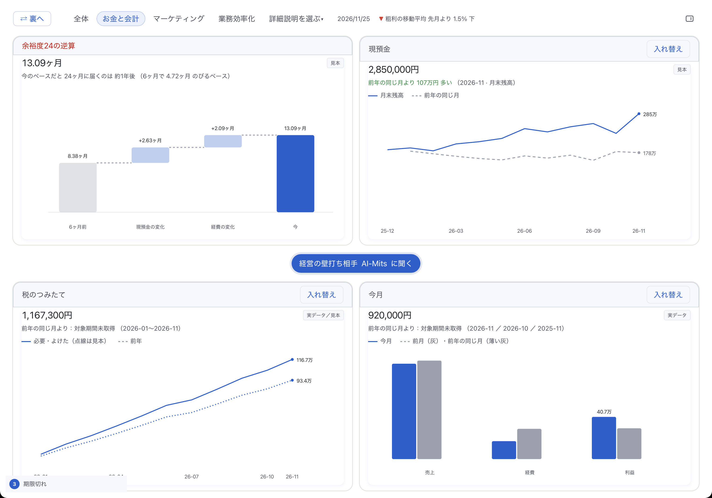
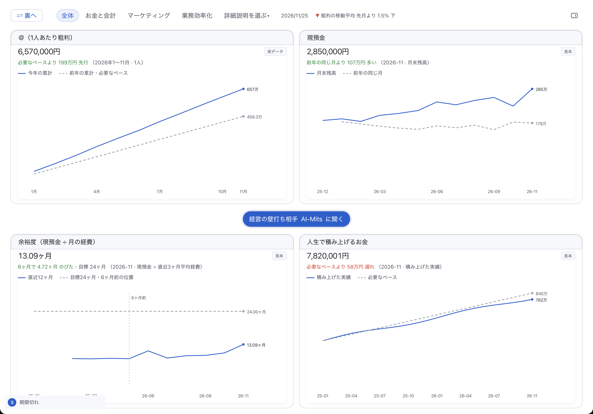
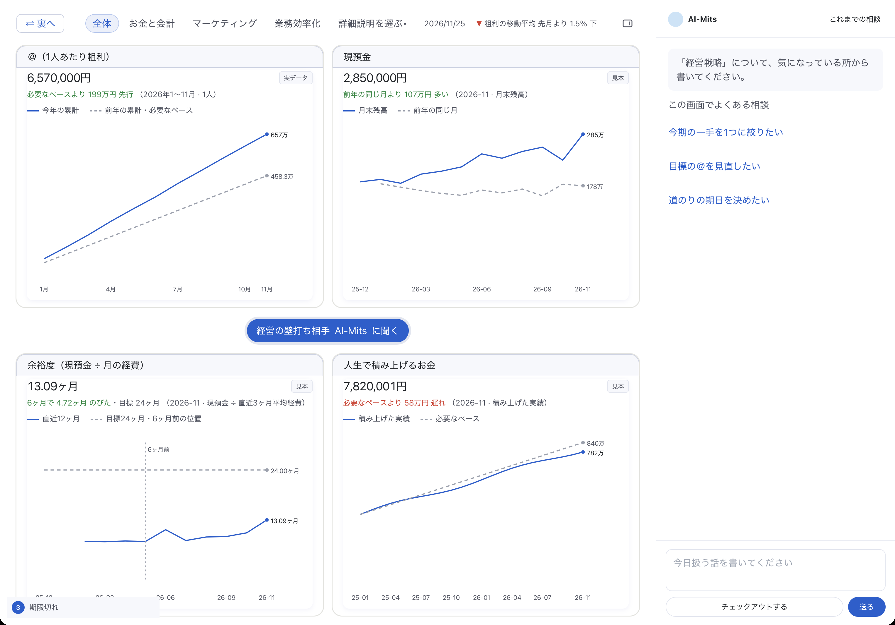

経営戦略

見本のデータ・版 2.0.5 のヘルプの写真機能長いLPから来た方へ：機能・AI-Mits・データの扱いを選んで確かめられます。
コンサルタント・講師など、知識や助言を届ける一人型の事業者の方へ。
ご自分の値上げや外注を決められずにいるとき、数字と事情をAI-Mitsに相談できる経営アプリです。
外注費と残るお金、仕事の時間を比べ、まず誰に何の仕事の見積もりを頼むか、一つ決めてみてください。

表の上には「全体」「お金と会計」「マーケティング」「業務効率化」と「詳細説明を選ぶ」があります。その右に日付があります。
見本のデータ・版 2.0.5 のヘルプの写真月次決算を見て「いま何を変えようか」と考えるために、AI-Mits＆経営アプリ（経営の運転台）を作っています。
お金も、お客様も、働き方も同じアプリで見て、気になることをAI-Mitsに話せます。
コンサルタントや教え業のみなさんが、ご自分の事業で判断するときに使っていただきたいものです。
お礼のページでもダウンロードを渡すか（今のダウンロードのページはメールアドレスだけで落とせる作り）は未定
メールアドレスを登録して「見本の数字で、外注を決める3分」を見るこのあと：短い動画 → 3、40分の動画 → LEVEL 1 のレター → 30日お試しの申し込み
AI以前は、経営を知りたくても、計算・帳簿・分析に時間を取られ、経営を身につけるところまで手が回らなかったんですね。
AI時代は、計算をAIに任せて、空いた時間を経営に使えるようになりました。
数字から何を考え、何を変えるかを、ご自分の事業で学んでいけます。
だから今は、経営を身につけることが勝ち筋になると考えています。
「でも今AIがあるので計算に関しても早くやってくれるし、全面的に勉強し直してもいいなみたいな感じ。そういう感じですよね」
「投入時間がすごい減ってる。だからこそ使える先をもっと経営とか、っていう風になった。じゃあ何しようか」
「そうですね。取り組める希望が。さっきも言った希望が。光が」
経営を身につけて、自分でこれからの事業を考えられることが、一人で事業をする方の光になればと思っています。
大企業が別々に買っている「見える」と「見立て」を、一人の事業主にも一つで届けたいと思っています。
子供の行事の日に仕事を入れず、夜10時過ぎの資料づくりを見直したい。そんなときは、残したいお金と人に任せる仕事を一緒に考えてみてください。
値上げや外注をすぐ決める前に、お客様が喜んでいる仕事と、その仕事にかかる費用・時間を確かめます。
帳簿がまだ整っていないときは、通帳の残高、確かめられる入金、支払い予定を整理して相談する例から始められます。入金の記憶は未確認の情報として伝え、確かな費用がそろうまでは、継続する外注の契約を決めずに比較する材料を集める、という進め方です。
ここで示したのは使う目的と相談の説明例です。帳簿が自動で整うことや、家族との時間が増えた実績を示すものではありません。
| 帳簿が整う前の月 | 帳簿が整ったあとに先月を見直す月 |
|---|---|
| 通帳の残高・確かめられる入金・支払い予定をそろえます。予定と確認済みの数字は分けて書きます。 | 会計ソフトから先月の売上・経費・利益を取り込み、月次決算を開きます。 |
| AI-Mitsに「帳簿はまだ途中です」と伝え、支払いの時期と手元に残すお金を相談します。 | 予定と実績の違いを見て、先月決めた行動を振り返ります。 |
| 確定していない利益を断定せず、いま確かめられることと今月やることを1つ決めます。 | 違った理由を相談し、今月の行動を1つ決めます。帳簿が遅れた月もあとから見直します。 |
目標のことなら「経営戦略」、お金の変化なら「お金と会計」を開けます。
お客様との関係は「マーケティング」、時間の使い方は「業務効率化」で考えられます。
別々に見ていた情報も、ここで見比べて判断に使えます。

コンサルは外にいる。すごい相棒は中にいる
AI-Mits右の欄からAI-Mitsに話しかけられます。
数字だけでは分からない仕事の事情や、これからどうしたいかも話してください。
そこから、次に何をするかを具体的に考えていけます。
見本の帳簿を使った開発版 v6 の試験で、値上げの相談にこう答えました。
分かります。忙しいのに手元に残らないのはしんどいですし、お客さんが離れるのは怖いですよね。 値段は、相場や怖さで決めなくて大丈夫です。お客さんが買ったあとに得るものから決めます。いちばん高いコースを買ったお客さんは、1年でどんな得をしていますか？ 売上が増えた、時間が浮いたなど、ざっくりで構いません。
コンサルティング 600社以上
60業種以上
購入者 1万人以上
ここにあるのは、僕が取り組んできたコンサルティングや教材の実績です。
経営アプリの利用者数や、使った方の成果を示した数字ではありません。
事業の数字から何を考え、何を決めるかを、アプリでも使えるようにしています。
数字を見て経営をしたら利益が５倍に
どうしてお金が残っていなかったのかがすごく納得できて、だから何をしたらいいのかも見えてきて、着実に実行していくことで結果的に利益が５倍になりました。
ラーメン店経営 屋嘉比さん
年商1,000万円から6,000万円へ拡大（3年間で6倍）
西田さんとの出会い当時、年商1,000万円程度の個人事業主でしたが、3年後には6,000万円まで事業を拡大できました。
個人事業主 川田さん
赤字体質が６ヵ月で利益体質に
昨年は赤字でしたが、たった6ヶ月でいまの事業のままで利益が残る体質に変わりました。
ウェディング撮影 矢括さん
僕の経営コンサルティングについていただいた声です。

コンサルの頭の中の配線を、アプリにした
開発の経緯自分の事業で起きていることを見て、次に何をするかを決めるために、経営の考え方とアプリをつなげています。
数字を比べたり、変わった理由を考えたりするときの説明も用意しています。
なぜ作り始めたか、AI時代の仕事をどう考えているかは、開発の経緯でお話しします。
数字は、あなたのパソコンの中に置きます
データの扱いアプリの台帳は、お使いのパソコンに保存します。
AI-Mitsへの相談には外部のAIを使いますので、相談するときには情報を送ります。
何を送るかは、相談の前に「データの扱い」で確かめられます。
竹の30日お試し 0円・31日目から 9,700円／月（税込）
料金マネーフォワード と freee の両方
Stripe・UTAGE・CSV も取り込める
使える
Mac と Windows の両方
お使いのパソコンの中だけ
パソコンを替える前に、設定の「データの控え」で控えを書き出せる
管理会計とは、攻めの経営者のための会計。
会計ソフトの帳簿を読み取り、ご自分の経営判断に使える数字に組み替えます。
税金の計算は会計ソフトで整えながら、このアプリでは費用の分け方や粗利の配分を考えられます。
STRACで粗利の人件費・固定費・未来費・利益への配分を目安と比べ、どの費用を見直すか考えられます。
100円損益で100円稼ぐために使った額を月ごとに比べ、外注を増やす前後の時間と残るお金を考えられます。
顧客の推移やお客さまを5つに分ける画面で、お付き合いの長さや取引を見て、誰に何を届けるか考えられます。
残したい利益から必要な売上を逆算し、今の数字との差を見て、毎月やることを考えられます。
画面の説明を読み、教材で理由を確かめ、AI-Mitsにご自分の事情を話しながら学べます。
教材を全部見終えてから使う必要はありませんので、利益の配分やお客様との関係など、いま気になることから始めてください。
 見本のデータ・版 2.0.5 のヘルプの写真
見本のデータ・版 2.0.5 のヘルプの写真 見本のデータ・版 2.0.5 のヘルプの写真
見本のデータ・版 2.0.5 のヘルプの写真